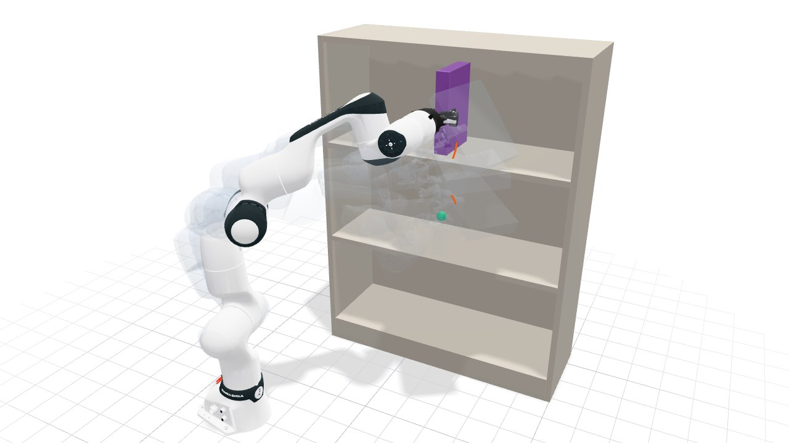
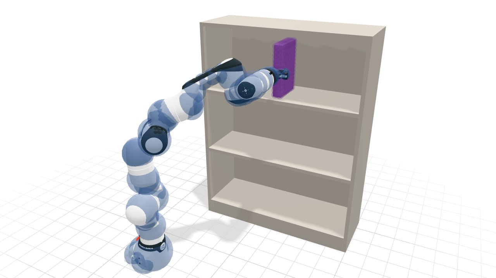
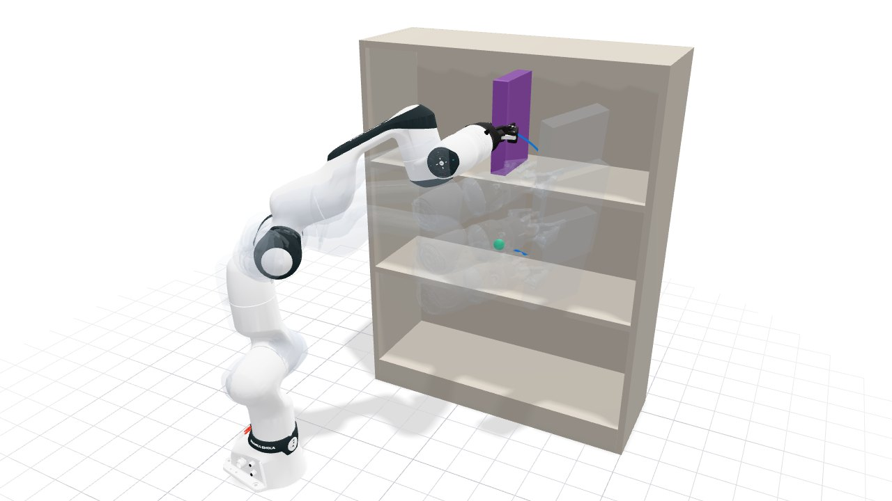

Manipulation#
In this guide, we plan a Franka FR3 with a Robotiq 2F-85 gripper that moves a box it holds from one compartment of a shelf to another. We plan the move with the arm’s kinetic-energy metric, measure the path, and then plan it again with the Euclidean metric on the joint angles.

The finished plan. The faint copies show the arm along the path, and the orange curve traces the gripper’s tool center point from the start (green) to the goal (orange). Drag to orbit, and use the controls to pause the arm or move it along the path.
The full script is examples/robots/manipulation/arm_ke.py, and the C++ version is
examples/robots/manipulation/arm_ke.cpp.
1. Load the robot and the scene#
geodex.robots.Fr3Gripper() is the arm’s configuration space, its seven joint angles within
their limits, with the kinetic-energy metric of its mass matrix. The scene is the shelf scene of
the MoveIt demo in MoveIt 2 Planner, an IKEA BILLY shelf of seven boards that
geodex.Scene holds as boxes. VAMP [1] checks the arm’s 60 collision
spheres against them. The gripper holds a 0.04 x 0.24 x 0.16 m box between its two finger
pads 40 mm apart. 112 spheres contain the box and reach at most 1 cm outside it.
geodex.vamp.attach_spheres fixes them to the gripper’s tool center point (TCP), with the box’s
center 0.055 m along the TCP’s z axis, and the check moves them with the arm.
import numpy as np
import geodex
# An IKEA BILLY shelf in the arm's base frame, its seven boards (two sides, top, base, two
# shelves, back) as (center, size) in meters.
SHELF = [
((0.793492, 0.618718, 0.53), (0.018, 0.28, 1.06)),
((0.011492, 0.618718, 0.53), (0.018, 0.28, 1.06)),
((0.402492, 0.618718, 1.051), (0.8, 0.28, 0.018)),
((0.402492, 0.618718, 0.04), (0.764, 0.28, 0.08)),
((0.402492, 0.608718, 0.3977), (0.764, 0.26, 0.018)),
((0.402492, 0.608718, 0.7243), (0.764, 0.26, 0.018)),
((0.402492, 0.756218, 0.53), (0.78, 0.005, 1.06)),
]
# The held 0.04 x 0.24 x 0.16 m box as 112 spheres (x, y, z, radius) that contain
# it and reach at most 1 cm outside it. The rows give the spheres with x, y, z >= 0
# in the box's frame, and their mirror images give the rest.
OCTANT = [
[0.012, 0.112, 0.072, 0.018], [0.01, 0.0, 0.07, 0.02],
[0.01, 0.052, 0.07, 0.02], [0.01, 0.072, 0.07, 0.02],
[0.01, 0.092, 0.07, 0.02], [0.01, 0.11, 0.032, 0.02],
[0.01, 0.11, 0.052, 0.02], [0.008, 0.018, 0.068, 0.022],
[0.008, 0.034, 0.068, 0.022], [0.008, 0.108, 0.0, 0.022],
[0.008, 0.108, 0.014, 0.022], [0.0, 0.106, 0.066, 0.024],
[0.0, 0.0, 0.014, 0.03], [0.0, 0.0, 0.046, 0.03], [0.0, 0.026, 0.0, 0.03],
[0.0, 0.026, 0.036, 0.03], [0.0, 0.05, 0.046, 0.03], [0.0, 0.052, 0.014, 0.03],
[0.0, 0.08, 0.0, 0.03], [0.0, 0.08, 0.026, 0.03], [0.0, 0.082, 0.046, 0.03],
]
# The gripper holds the box between its finger pads, its 40 mm side along the x axis
# of the TCP frame and its center 0.055 m along the z axis.
BOX = [[sx * x, sy * y, 0.055 + sz * z, r] for x, y, z, r in OCTANT
for sx in ((1, -1) if x else (1,)) for sy in ((1, -1) if y else (1,))
for sz in ((1, -1) if z else (1,))]
def shelf_with_box():
"""The shelf as a collision scene, with the box attached to the gripper."""
scene = geodex.Scene()
for center, size in SHELF:
scene.add_box(position=center, size=size)
env = scene.env()
geodex.vamp.attach_spheres(env, BOX)
return env
env = shelf_with_box()
robot = geodex.robots.Fr3Gripper() # the kinetic-energy metric on the joints
print(robot.name(), "joints:", robot.dim())
Full example: examples/robots/manipulation/arm_ke.py
#include <cmath>
#include <cstdio>
#include <array>
#include <utility>
#include <vector>
#include <geodex/integration/vamp/registry.hpp>
#include <geodex/robots/planning.hpp>
namespace gr = geodex::robots;
namespace gv = geodex::integration::vamp;
namespace gp = geodex::planning;
/// An IKEA BILLY shelf in the arm's base frame, its seven boards (two sides, top,
/// base, two shelves, back) as center and size in meters.
const std::vector<std::pair<Eigen::Vector3d, Eigen::Vector3d>> kShelf = {
{{0.793492, 0.618718, 0.53}, {0.018, 0.28, 1.06}},
{{0.011492, 0.618718, 0.53}, {0.018, 0.28, 1.06}},
{{0.402492, 0.618718, 1.051}, {0.8, 0.28, 0.018}},
{{0.402492, 0.618718, 0.04}, {0.764, 0.28, 0.08}},
{{0.402492, 0.608718, 0.3977}, {0.764, 0.26, 0.018}},
{{0.402492, 0.608718, 0.7243}, {0.764, 0.26, 0.018}},
{{0.402492, 0.756218, 0.53}, {0.78, 0.005, 1.06}},
};
/// The held 0.04 x 0.24 x 0.16 m box as 112 spheres (x, y, z, radius) that
/// contain it and reach at most 1 cm outside it. The rows give the spheres with
/// x, y, z >= 0 in the box's frame, and their mirror images give the rest.
const std::vector<std::array<double, 4>> kOctant = {
{0.012, 0.112, 0.072, 0.018}, {0.01, 0.0, 0.07, 0.02},
{0.01, 0.052, 0.07, 0.02}, {0.01, 0.072, 0.07, 0.02},
{0.01, 0.092, 0.07, 0.02}, {0.01, 0.11, 0.032, 0.02},
{0.01, 0.11, 0.052, 0.02}, {0.008, 0.018, 0.068, 0.022},
{0.008, 0.034, 0.068, 0.022}, {0.008, 0.108, 0.0, 0.022},
{0.008, 0.108, 0.014, 0.022}, {0.0, 0.106, 0.066, 0.024},
{0.0, 0.0, 0.014, 0.03}, {0.0, 0.0, 0.046, 0.03},
{0.0, 0.026, 0.0, 0.03}, {0.0, 0.026, 0.036, 0.03},
{0.0, 0.05, 0.046, 0.03}, {0.0, 0.052, 0.014, 0.03},
{0.0, 0.08, 0.0, 0.03}, {0.0, 0.08, 0.026, 0.03},
{0.0, 0.082, 0.046, 0.03},
};
/// The shelf as a collision scene, with the box attached to the gripper's TCP
/// frame. The gripper holds the box between its finger pads, its 40 mm side along
/// the x axis of the TCP frame and its center 0.055 m along the z axis.
gv::EnvHandle shelf_with_box() {
auto builder = gv::make_scene_builder();
for (const auto& [center, size] : kShelf) {
gv::scene_add_box(builder, center, size, Eigen::Quaterniond::Identity());
}
auto env = gv::build_scene(builder);
std::vector<std::array<double, 4>> box;
for (const auto& [x, y, z, r] : kOctant) {
for (double sx : {1.0, -1.0}) {
for (double sy : {1.0, -1.0}) {
for (double sz : {1.0, -1.0}) {
if ((sx < 0 && x == 0.0) || (sy < 0 && y == 0.0) || (sz < 0 && z == 0.0)) {
continue;
}
box.push_back({sx * x, sy * y, 0.055 + sz * z, r});
}
}
}
}
gv::attach_spheres(env, box);
return env;
}
int main(int argc, char** argv) {
constexpr auto R = gr::Robot::Fr3Gripper;
const auto env = shelf_with_box();
gr::RobotPlanOptions options; // the kinetic-energy metric on the joints
std::printf("%s joints: %d\n", gr::name(R).data(), gr::MassMatrix<R>::Nq);
Full example: examples/robots/manipulation/arm_ke.cpp
It prints fr3_arm_gripper joints: 7. The collision check sees the arm and the box as these
spheres.

The kinetic-energy plan of step 2 with the arm’s collision spheres (blue) and the spheres that contain the box (purple).
2. Plan the move#
The start holds the box in the middle compartment and the goal holds it in the top compartment,
as in the MoveIt demo. PlanSettings(iterations=1500, seed=1) gives the planner 1500
iterations and a fixed seed. Passing the scene as collision checks every configuration and
every edge with VAMP, the box included.
start = np.array([0.1758, -0.1952, 0.4451, -2.1536, 1.9130, 2.0966, 1.0981]) # middle bay
goal = np.array([0.1591, -0.0746, 0.4710, -1.3579, 1.4042, 2.1810, 1.9137]) # top bay
settings = geodex.PlanSettings(iterations=1500, seed=1)
result = geodex.plan(robot, start, goal, collision=env, settings=settings)
print(f"solved={result.solved} cost={result.cost:.3f} waypoints={len(result.path)}")
Full example: examples/robots/manipulation/arm_ke.py
Eigen::VectorXd start(7), goal(7);
start << 0.1758, -0.1952, 0.4451, -2.1536, 1.9130, 2.0966, 1.0981; // middle bay
goal << 0.1591, -0.0746, 0.4710, -1.3579, 1.4042, 2.1810, 1.9137; // top bay
gp::PlanSettings settings;
settings.iterations = 1500;
settings.seed = 1;
const auto result = gr::plan<R>(start, goal, env, settings, options);
std::printf("solved=%d cost=%.3f waypoints=%zu\n", result.solved, result.cost,
result.path.size());
Full example: examples/robots/manipulation/arm_ke.cpp
It prints solved=True cost=1.143 waypoints=1597. The cost is the length of the path under the
kinetic-energy metric.
planning time
first solution
iterations
The times are from a laptop CPU (Intel Core i7-10875H). The planner finds the first path after
7 iterations. The 1500 iterations take 69 ms, and smoothing takes 51 ms.
result.first_solution_ms, result.time_ms and result.smooth_ms hold these times.
3. Measure the path#
The returned waypoints are joined by straight lines in joint coordinates. measure adds up
their length in joint space and their length under the kinetic-energy metric,
\(\int \sqrt{\dot q^\top M(q)\, \dot q}\, dt\), by the midpoint rule on each line.
def measure(path, pieces=16):
"""Joint-space and kinetic-energy length of a path with straight edges in joint
coordinates. The kinetic-energy length uses the midpoint rule."""
fr3 = geodex.robots.Fr3Gripper() # fr3.mass_matrix(q) is the arm's inertia M(q)
joint = energy = 0.0
for a, b in zip(path[:-1], path[1:]):
d = b - a
joint += np.sqrt(d @ d)
for k in range(pieces):
q = a + ((k + 0.5) / pieces) * d
energy += np.sqrt(d @ fr3.mass_matrix(q) @ d) / pieces
return joint, energy
joint, energy = measure(result.path)
print(f"joint length={joint:.3f} rad kinetic-energy length={energy:.3f}")
Full example: examples/robots/manipulation/arm_ke.py
/// Joint-space and kinetic-energy length of a path with straight edges in joint
/// coordinates. The kinetic-energy length uses the midpoint rule.
std::pair<double, double> measure(const std::vector<Eigen::VectorXd>& path,
int pieces = 16) {
const gr::MassMatrix<gr::Robot::Fr3Gripper> mass; // the arm's inertia M(q)
double joint = 0.0, energy = 0.0;
for (std::size_t i = 0; i + 1 < path.size(); ++i) {
const Eigen::VectorXd d = path[i + 1] - path[i];
joint += std::sqrt(d.dot(d));
for (int k = 0; k < pieces; ++k) {
const Eigen::VectorXd q = path[i] + ((k + 0.5) / pieces) * d;
energy += std::sqrt(d.dot(mass(q) * d)) / pieces;
}
}
return {joint, energy};
}
const auto [joint, energy] = measure(result.path);
std::printf("joint length=%.3f rad kinetic-energy length=%.3f\n", joint,
energy);
Full example: examples/robots/manipulation/arm_ke.cpp
It prints joint length=4.918 rad kinetic-energy length=1.143.
4. Try it: plan with the Euclidean metric#
Pass metric="euclidean" and plan again. The Euclidean metric measures a joint velocity by
\(\dot q^\top \dot q\), and the kinetic-energy metric by
\(\dot q^\top M(q)\, \dot q\).
euclidean = geodex.robots.Fr3Gripper(metric="euclidean")
euclidean_result = geodex.plan(euclidean, start, goal, collision=env, settings=settings)
joint, energy = measure(euclidean_result.path)
print(f"joint length={joint:.3f} rad kinetic-energy length={energy:.3f}")
Full example: examples/robots/manipulation/arm_ke.py
options.metric = gr::ArmMetric::Euclidean;
const auto euclidean_result = gr::plan<R>(start, goal, env, settings, options);
const auto [joint, energy] = measure(euclidean_result.path);
std::printf("joint length=%.3f rad kinetic-energy length=%.3f\n", joint, energy);
return 0;
}
Full example: examples/robots/manipulation/arm_ke.cpp
It prints joint length=1.688 rad kinetic-energy length=1.263. The Euclidean path turns the
joints less in total, and the kinetic-energy path is 10 percent shorter under the kinetic-energy
metric.
planning time
first solution
iterations

The Euclidean plan of the same move, drawn the same way with the trace in blue.
How far each joint turns along the two paths. The kinetic-energy plan turns the wrist joints 6 and 7 by 2.09 and 4.16 rad, against 0.63 and 0.82 rad, and joint 2 by 0.70 rad, against 0.12 rad.
The mass matrix weighs the joints very differently. At the start, \(M(q)\) has 1.31, 1.96, 1.50 and 1.16 on the diagonal for joints 1 to 4, and 0.034, 0.066 and 0.001 for the wrist joints 5 to 7. Turning joint 7 alone at a given speed takes about 1/2000 of the kinetic energy of turning joint 2 alone. The kinetic-energy plan moves the box with the wrist.
Where to go next#
Every fixed-base robot of the catalog takes the same calls, for example
geodex.robots.UR5().geodex.load_scenereads a scene of boxes, spheres and cylinders from a MotionBenchMaker [2] YAML file instead.MoveIt 2 Planner plans the same move through MoveIt 2 with the geodex planner plugin.
Metrics as Robot Models covers the kinetic-energy metric and its lower bound.
Path Smoothing covers the smoother that shortens the planner’s path.
Whole-Body Planning puts an arm on a mobile base.
Collision checking covers how geodex checks a robot against the scene.